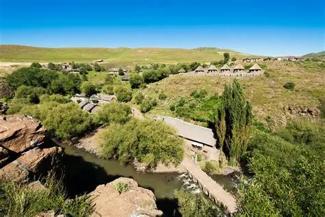
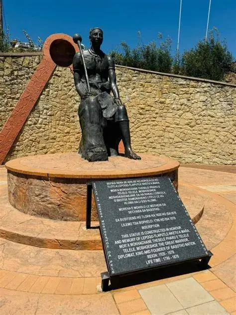
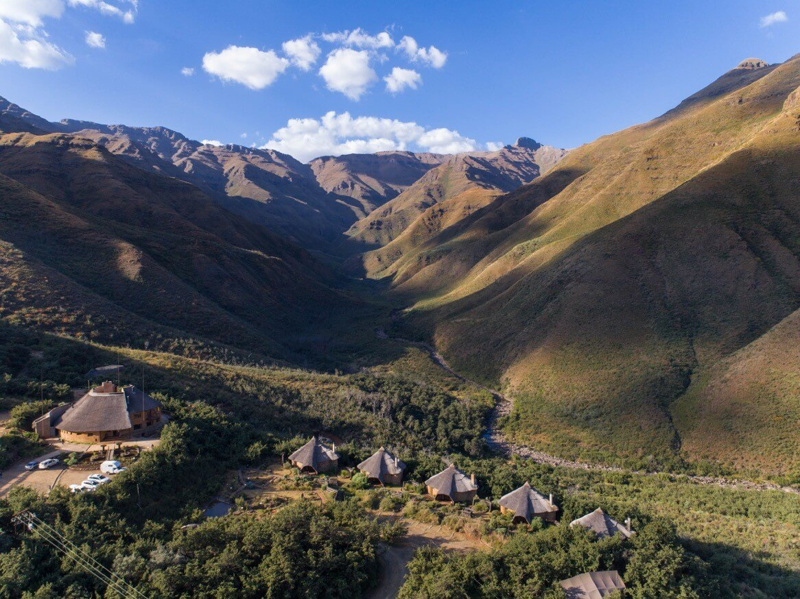
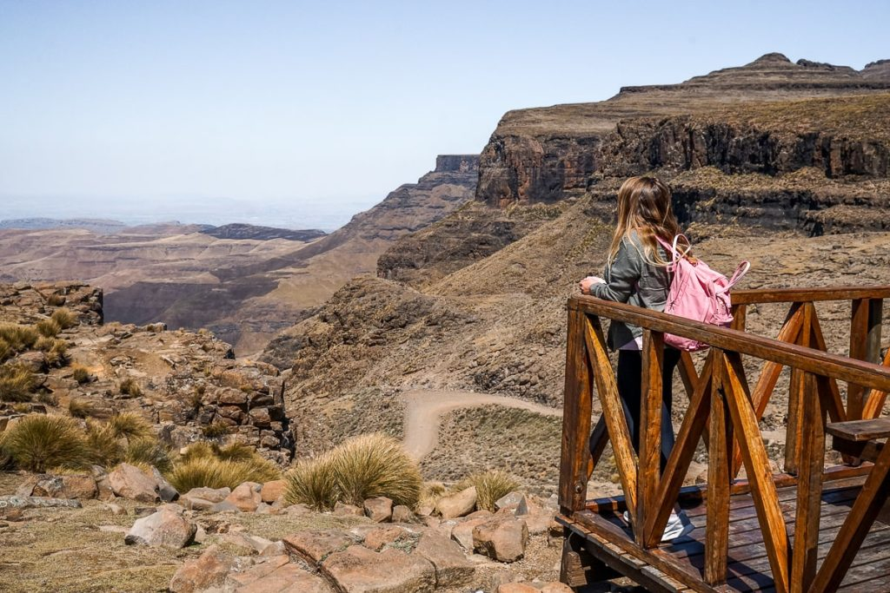
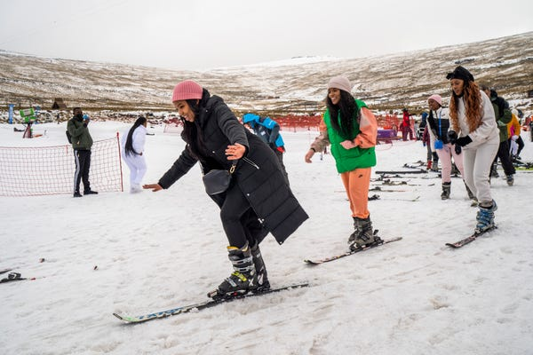
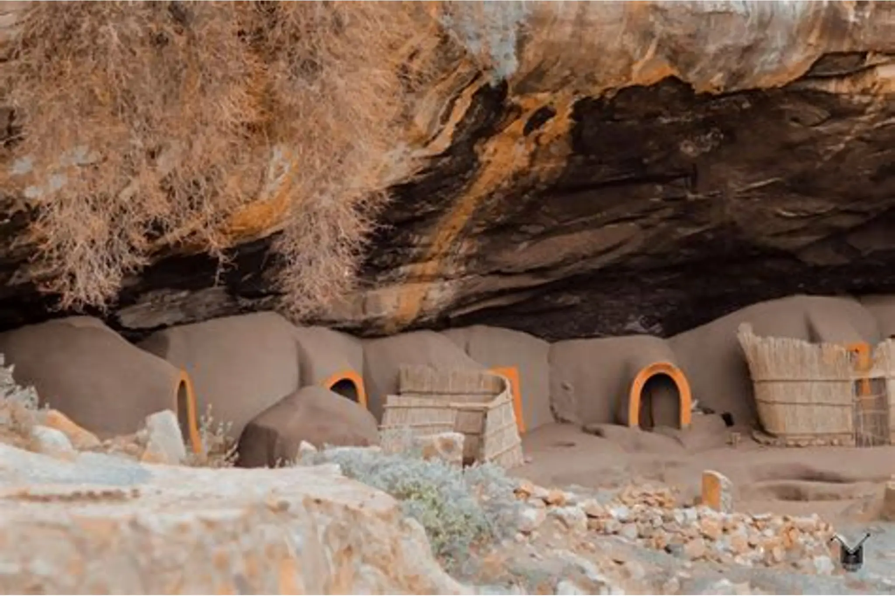

Semonkong & Maletsunyane Falls
Situated in the Thaba Putsoa (‘Blue Mountains’) about 115km southeast of Maseru, Semonkong (‘Place of Smoke’) is a small highland town whose name comes from the spectacular cloud of spray thrown up by the nearby Maletsunyane waterfall when it is in full flow. The falls are possibly the best-known natural feature in Lesotho and they stand as one of Africa’s tallest single-drop waterfalls, plummeting 192 metres into a narrow gorge hemmed by steep green slopes and sandstone cliffs.

Thaba Bosiu Cultural Village
Thaba-Bosiu lies at the historic and spiritual heart of the Sotho Kingdom. Located 20km east of Maseru and rising to an altitude of 1,800 metres, this near-impregnable sandstone plateau served as the residence and military stronghold of King Moshoeshoe I, the kingdom’s founding father, throughout most of his mid-19th century reign. Moshoeshoe arrived there with his people in the midst of the Lifaqane wars initiated by Shaka Zulu and was quick to recognise its strength as a natural fortress.

Tsehlanyane National Park
Tsehlanyane is located in the southern Maluti Mountains, 150km northeast of Maseru. The national park is considered to be Lesotho’s most accessible park, and it is known for its rugged montane vistas, rich sub-Alpine floral diversity, stunning waterfalls, diverse birdlife and an excellent network of hiking and horseback trails.

Sani Pass & Highest Pub
Sani Pass is a must-visit destination for travelers seeking adventure and cultural experiences. The pass offers a unique blend of breathtaking landscapes, historical significance, and a chance to immerse oneself in the local culture. The Sani Pass is known for its challenging 4×4 trails and dramatic switchbacks, providing an adrenaline rush for those seeking a thrilling experience. Visitors can learn about the Basotho people's way of life, meet local herders, and gain insights into the unique traditions of the mountain kingdom.

Afriski Mountain Resort
Afriski is one of only two ski resorts in Sub-Saharan Africa. The history of the resort dates back to the 1960s, when the Maluti Ski Club was founded in the area and operated ski lodges in the winter season.[6] The resort is a 4.5-hour drive from Johannesburg or Pretoria via the steep tarred Moteng pass and the Mahlasela pass; it sits along Highway A1. The resort can accommodate about 320 people and offers a 1 km ski slope, beginners slope and operates during the winter months (June–August). Afriski also operates in the summer months and offer a variety of activities, from mountain biking, guided Enduro motorbike trips, paintball, hiking, trail running, and more.

Ha Kome Cave Dwellings
The Ha Kome Cave Village is situated in Berea district. Once home to the San as evidenced by the faded cave paintings, the cave was in more recent history the hideout place for the Basia and Bataung clans during the Lifaqane wars brought about by Shaka Zulu’s reign. The cave is still inhabited by their descendants to this day.